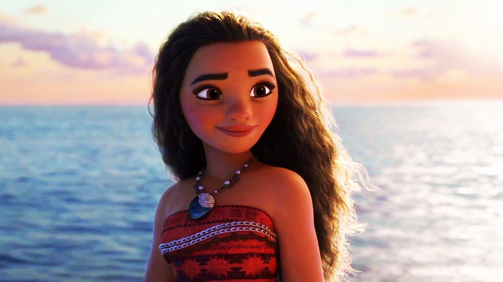
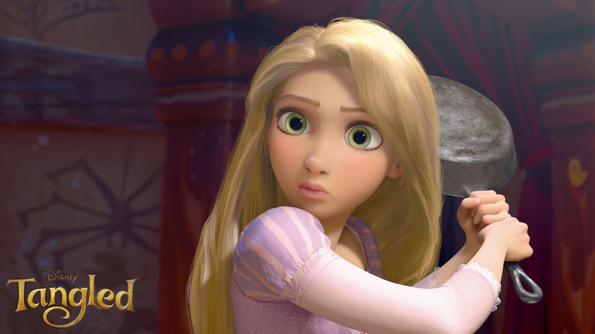
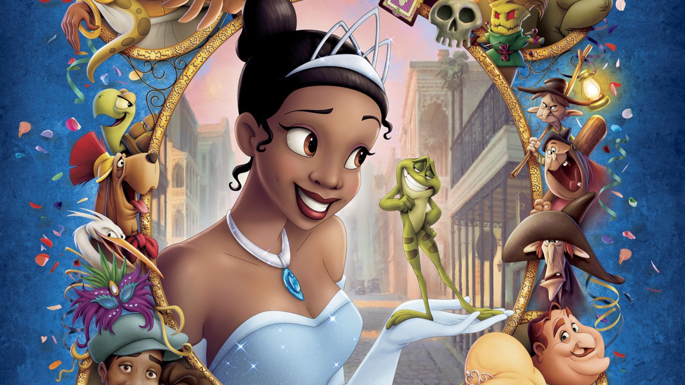

Confira a seguir as melhores princesas da franquia!
Moana é a personagem principal do filme de 2016, Moana: Um Mar de Aventuras. Nascida na vila da ilha de Motunui, Moana é filha do chefe Tui e Sina, com um amor herdado pelos mares e pelas viagens. Quando sua ilha fica ameaçada por uma escuridão que mata vidas, Moana é escolhida pelo oceano para atravessar o mar para salvar seu povo e o mundo.
Moana é o décimo segundo membro oficial da linha Disney Princesa.
A voz original de Moana é de Auli'i Cravalho.
Princesa Rapunzel Bezerra é a heroína da Disney, que surgiu no filme animado de 2010, "Enrolados". Ela é adaptada do conto original de Rapunzel, feito pelos Irmãos Grimm. Ela é dublada por Mandy Moore.
Rapunzel é uma menina de 18 anos que é conhecida por seus cabelos dourados, que chegam a medir 70 metros de comprimento. Ela é magra, tem grandes olhos verdes, um sorriso brincalhão, e sardas, que geralmente não são mostradas em mercadorias.
A Princesa e o Sapo/ The Princess and the Frog (2009)
A primeira princesa Disney oficial desse século, Tiana é uma independente garçonete que vive na Nova Orleans dos anos 20 que acaba encontrando um sapo que se diz ser um príncipe amaldiçoado. Ela é a primeira (e única) personagem negra que faz parte da franquia Disney Princess.
Ela é a filha determinada, sabe oque quer, corajosa e humilde, e embarca em uma aventura para voltar a ser humana. É dublada por Anika Noni Rose.
Ludmila Apolinário e Isabelle Myura | DSNT1N | Prof.° Oscar | Programação Web